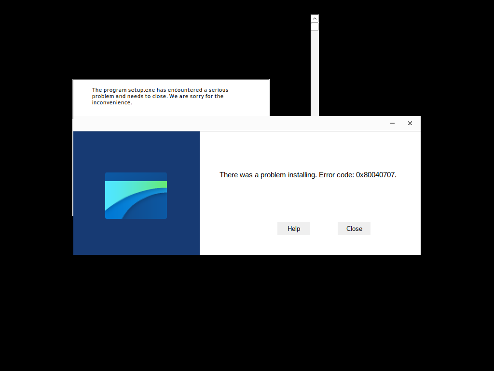

Phase Timeline
| # | Phase | Status | Duration | Summary |
|---|---|---|---|---|
| 1 | phase1_unpack_emulation | success | 14307 ms | Unpack emulation: partial |
| 2 | phase2_modification_impact | success | 81 ms | Impact analysis: 3 check sites |
| 3 | phase3_memory_reconstruction | success | 153 ms | Memory reconstruction: 2 dumps |
| 4 | phase4_edr_extraction | success | 0 ms | EDR extraction: 17 indicators |
| 5 | ci_validation | success | 0 ms | CI + behavioral + visual validation (see FINAL bundle) |
Integrity Patch Table (RVA)
In-memory branch patches applied during Phase 3 reconstruction — 8 sites.
| ID | RVA | Original | Patched | Strategy | Section |
|---|---|---|---|---|---|
| PAT-BR-0001 | 0x15d05f | 7444 | 9090 | nop_branch | .sg1 |
| PAT-BR-0002 | 0x15d061 | 65736b | 909090 | nop_branch | .sg1 |
| PAT-BR-0003 | 0x15d064 | 746f | 9090 | nop_branch | .sg1 |
| PAT-BR-0004 | 0x15d066 | 7057 | 9090 | nop_branch | .sg1 |
| PAT-BR-0005 | 0x15d167 | 7012 | 9090 | nop_branch | .sg1 |
| PAT-BR-0006 | 0x15d17c | 780c | 9090 | nop_branch | .sg1 |
| PAT-BR-0007 | 0x15d188 | 790c | 9090 | nop_branch | .sg1 |
| PAT-BR-0008 | 0x15d18f | 7a13 | 9090 | nop_branch | .sg1 |
Behavioral Telemetry — Baseline vs Reconstructed
Behavioral Flags
| startup_stable | True |
| dialog_anomaly_absent | True |
| main_loop_entry_confirmed | True |
| crash_signature_none | True |
Visual Flags
| startup_sequence_captured | True |
| main_window_visible | True |
| modal_dialog_absent | True |
| visual_baseline_parity | True |
| Metric | Baseline (original) | Reconstructed (patched) | Notes |
|---|---|---|---|
| Process survived (seconds) | 2.5 | 2.5 | Δ runtime after integrity-site modification |
| Exit code | 255 | 255 | Wine process exit comparison |
| Main loop signals | 1 | 1 | GetMessage/PeekMessage pattern count |
| Crash signatures | 0 | 0 | Access violation / SEH fault patterns |
| License dialog patterns | 0 | 0 | License-related WINEDEBUG hits |
| Startup sequence events | 332 | 315 | Time-stamped phase events |
| Phase: process_spawn | 1 | 1 | unchanged |
| Phase: loader_init | 0 | 0 | unchanged |
| Phase: module_load | 0 | 0 | unchanged |
| Phase: entry_point | 0 | 0 | unchanged |
| Phase: window_create | 0 | 0 | unchanged |
GUI Capture — Baseline Startup Sequence
baseline_t0

baseline_t1

baseline_t2
GUI Capture — Reconstructed PE Startup Sequence
reconstructed_t0

reconstructed_t1
reconstructed_t2
reconstructed_t3

Deliverable Files
- Reconstructed PE:
PouchLauncher-1.2_88e2_RECONSTRUCTED_756A8F0E.pe.bin - SHA-256:
07865a502caad7cc3c072fa20145e0cc450a92afc240ba347c1267570cb2a422 - Manifest:
MANIFEST.json - Screenshots:
screenshots/(7 files)